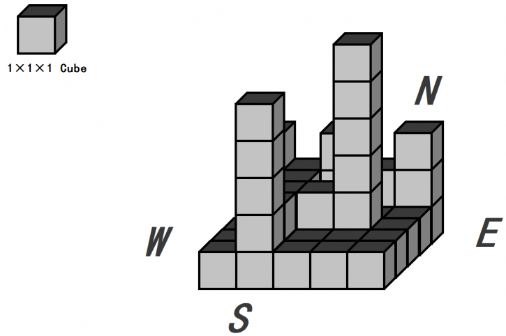
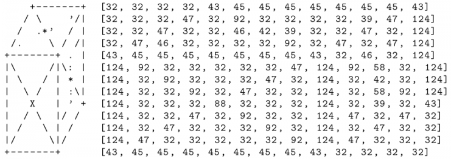
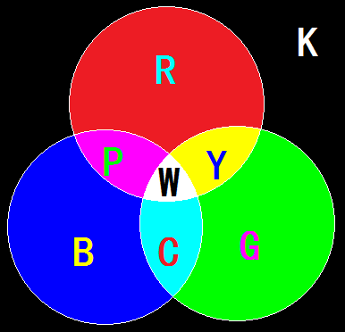

小渊是个聪明的孩子，他经常会给周围的小朋友们讲些自己认为有趣的内容。最近，他准备给小朋友们讲解彩色水平光源照射下的立体图，并请你帮他在平面上画出来。小渊有一块面积为 $m \times n$ 的矩形区域，上面有 $m \times n$ 个边长为 $1$ 的格子，每个格子上堆了一些同样大小的积木（积木的长宽高都是 $1$）。为了方便阐述，我们假设这块区域是坐北朝南的，下面我们给出一个例子。

小渊想请你打印出这些格子的立体图。我们定义每个积木为如下格式，并且不会做任何翻转旋转，只会严格以这一种形式摆放（左侧是应该打印出来的图样，右侧为对应每一个位置符号的十进制ASCII，其中ASCII为 32 的符号为空格。

在良好的光学环境下，小渊将 $T$ 束平行光同时照射在这些积木上。这些平行光首先满足一定是红绿蓝三基色之一，其次入射角度满足：与 $x$ 轴 $y$ 轴的夹角度数均为 $45$ 的倍数；且与 $z$ 轴正方向的夹角或为 $45$ 度，或为 $0$ 度，或为 $315$ 度。
具体来说，我们最多会考虑 $9$ 个方向的不同平行光，它们的入射方向可以被描述为：
西北方 $45$ 度仰角 正北方 $45$ 度仰角 东北方 $45$ 度仰角
正西方 $45$ 度仰角 垂直从上入射光 正东方 $45$ 度仰角
西南方 $45$ 度仰角 正南方 $45$ 度仰角 东南方 $45$ 度仰角
对于每一个单位积木来说，可以打印出来的三个表面被分为 $12$ 个小三角形。

红绿蓝三基色分别用字母RGB来表示。
而二次叠加后的三种颜色青黄紫，分别用YCP来表示。
对于三次叠加后的颜色，也就是白色，用W来表示。
 Comet OJ
Comet OJ